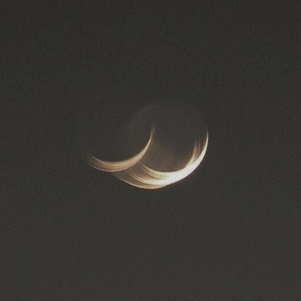
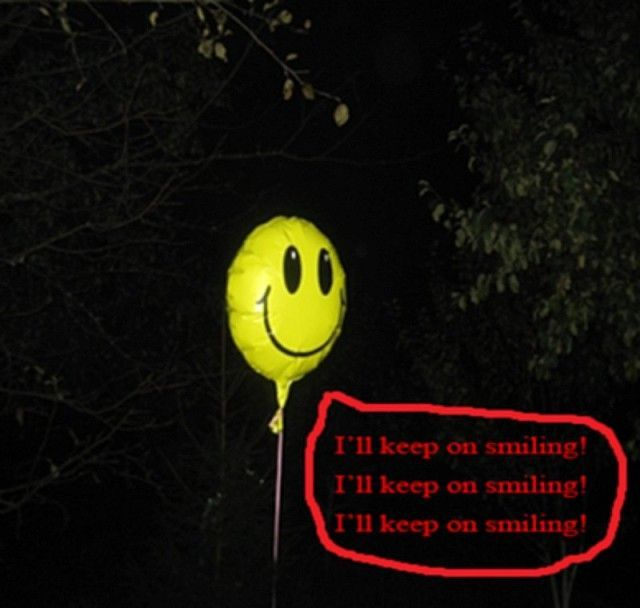

#05 (Space)
Stars...
Come take me home
Your whispers in my ear,
still echoing
As if you'd called
me from a place
I'd like to go.
...
in space no one
can crush your dreams
I am not at home there, here, anywhere.
...
World was on fire no one
could save me but you
...
No matter matters enough to be cared about
in those big holes the space creates.

When you touch me my skin breaks apart because
there is so much sunlight to break free from underneath.
It is everywhere, cracking, cracking, dissolving the
empty spaces between my bones, open.
...
Space had time
they said you and me together
was the final frontier running out

Deconstruct:
bone echo,
flesh ache,
nerver scream,
all underneath my skin.
...
SUBLIMINAL_MSSAGING:
H_E_L_L_O_?
D_O/Y_O_U/C_O_P_Y?
A_R_E/Y_O_U/R_E_C_E_I_V_I_N_G/T_H_I_S?
P_L_E_A_S_E/R_E_P_L_Y_.
S_O_O_N_.
...
-- -.-- / .-.. --- ...-. / .-. . -- . -- -... . .-. / .-.. .. ..-. . / .. ... / ..-. --- .-. . ...- .-. / .-.. .. -.- . / - .... . / ..- -. .. ...- . .-. ... .